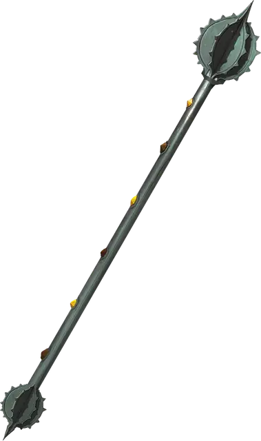

Жезл величественной мощи
Rod of Lordly Might
Жезл, легендарный (требуется настройка)

Рекомендованная стоимость 200 000 ЗМ
Навершие этого жезла ребристое, и его можно использовать, как магическую Булаву с бонусом +3 к броскам атаки и урона, совершаемым с ним. Шесть свойств жезла связаны с шестью кнопками, расположенными в ряд на его рукояти. Ещё три свойства жезла не связаны с этими кнопками, они описаны ниже.
Кнопки. Бонусным действием вы можете нажать одну из этих кнопок на рукояти жезла; эффект, связанный с этой кнопкой, длится до тех пор, пока вы не нажмёте другую кнопку или не нажмёте ту же кнопку снова — в последнем случае жезл возвращается в свою обычную форму.
Кнопка 1. Огненный клинок появляется из конца рукояти. Пламя этого клинка испускает Яркий свет в радиусе 40 футов и Тусклый свет ещё на 40 футов. Этот клинок можно использовать как магический Длинный меч или Короткий меч (на ваш выбор), наносящий при попадании 2к6 дополнительного урона Огнём.
Кнопка 2. Рёбра на навершии жезла складываются, а вместо них из навершия вылетают два лезвия в виде полумесяцев, превращая жезл в магический Боевой топор с бонусом +3 к броскам атаки и урона, совершаемым с ним.
Кнопка 3. Рёбра на навершии жезла складываются, а вместо них из навершия выдвигается наконечник копья, и рукоять жезла растягивается в древко длиной 6 футов, превращая жезл в магическое Копьё с бонусом +3 к броскам атаки и урона, совершаемым с ним.
Кнопка 4. Жезл превращается в шест для лазания длиной вплоть до 50 футов (на вашу усмотрение), причём кнопки остаются в вашей досягаемости. Шип в основании и три крюка на навершии надёжно удерживают шест в материалах, аналогичных по твёрдости граниту. На расстоянии 1 фута друг от друга на шесте располагаются горизонтальные перекладины, длиной 3 дюйма (~8см) с каждой стороны, благодаря которым шест можно использовать как лестницу. Шест может нести 4000 фунтов веса (~1800кг). Если на шест действует больший вес, или шест удерживается ненадёжно, жезл возвращается в свою обычную форму.
Кнопка 5. Жезл превращается в переносной таран. Этот таран предоставляет использующему его бонус +10 к проверкам Силы (Атлетика), совершаемым для проламывания дверей, баррикад и прочих препятствий.
Кнопка 6. Жезл возвращается в обычную форму или остаётся в ней, и начинает указывать на магнитный север (если это происходит в месте, где нет магнитного севера, ничего не происходит). Кроме того, жезл дарует вам знание того, на какой примерно глубине под землёй (или на какой примерно высоте над землёй) вы находитесь.
Вытягивание жизни. Когда вы попадаете по существу рукопашной атакой этим жезлом, можете заставить цель совершить спасбросок Телосложения Сл 17. При провале цель получат 4к6 дополнительного Некротического урона, а вы восстанавливаете Хиты в количестве, равном половине этого Некротического урона. Как только это свойство использовано, оно не может быть использовано снова до следующего рассвета.
Паралич. Когда вы попадаете по существу рукопашной атакой этим жезлом, можете заставить цель совершить спасбросок Телосложения Сл 17. При провале цель получает состояние Парализованный на 1 минуту. Она повторяет этот спасбросок в конце каждого своего хода, при успехе оканчивая на себе этот эффект.Как только это свойство использовано, оно не может быть использовано снова до следующего рассвета.
Ужас. Пока вы держите этот жезл, можете действием Магия заставить каждое видимое вами в пределах 30 футов от вас существо совершить спасбросок Мудрости Сл 17. При провале существо получаетсостояние Испуганный на 1 минуту. Она повторяет этот спасбросок в конце каждого своего хода, при успехе оканчивая на себе этот эффект. Как только это свойство использовано, оно не может быть использовано снова до следующего рассвета.